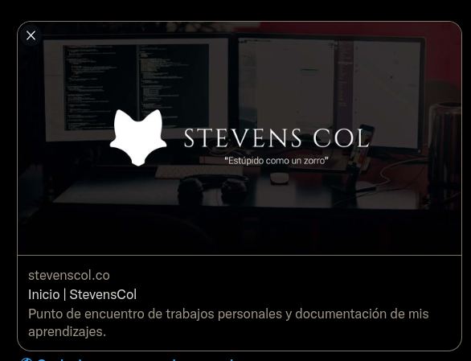

## Angular Universal 🚀 <br /> <br /> <div class="logo"> <img src="assets/me.png" class="image-logo rounded"/> <img src="assets/angular/angular-logo.png" class="image-logo" /> </div> <br /> <div> <em> Robert Stevens Pineda<!-- .element class="footer" --> </em> </div> <div> <em> stevenscol.co<!-- .element class="footer" --> </em> </div> <div> <em> twitch.tv/ScolDev - youtube.com/@ScolDev<!-- .element class="footer" --> </em> </div> --- ### Agenda 1. ¿Qué es Angular?<!-- .element class="fragment" --> 2. ¿Qué nos ofrece?<!-- .element class="fragment" --> 3. Páginas web tradicionales<!-- .element class="fragment" --> 4. Single Page Application (SPA)<!-- .element class="fragment" --> 5. Angular Universal<!-- .element class="fragment" --> 6. ¿Por qué Angular Universal?<!-- .element class="fragment" --> 7. ¿Cómo Instalar Angular Universal? <!-- .element class="fragment" --> 8. Comparativa<!-- .element class="fragment" --> --- ### 1. ¿Qué es Angular? Plataforma de desarrollo construida en TypeScript para desarrollar aplicaciones web SPA (Single Page Application). <!-- .element class="fragment" --> --- ### 2. ¿Qué nos ofrece? - <strong>Framework</strong> basado en componentes. <!-- .element class="fragment" --> - Colección de librerÃas que abarcan múltiples caracterÃsticas. <!-- .element class="fragment" --> - Conjunto de herramientas de desarrollador para facilitar el proceso de construcción de aplicaciones web. <!-- .element class="fragment" --> --- ### 3. Páginas web tradicionales (SSR) - Múltiples puntos de entrada o documentos HTML para las vistas de la aplicación.<!-- .element class="fragment" --> - Las páginas disponibles en la aplicación son elaboradas (rendering) y entregadas por el servidor mediante una recarga en el navegador.<!-- .element class="fragment" --> --- - Experiencia de usuario inicial más rápida.<!-- .element class="fragment" --> - Habilita el SEO (Search Engine Optimization) en la aplicación.<!-- .element class="fragment" --> --- Ciclo de vida tradicional de una página web <!-- .element class="fragment" --> <div class="image-full-size fragment"> <img src="assets/angular/traditional.png" /> <em>Server Side Rendering (SSR)</em> </div> --- ### 4. Single Page Application (SPA) <!-- .element class="fragment" --> - Página o aplicación web que solo tiene un documento HTML como punto de entrada. <!-- .element class="fragment" --> - El total de las páginas o caracterÃsticas de la aplicación son renderizadas en el navegador web. <!-- .element class="fragment" --> - No se requiere realizar recargas en la aplicación o páginas para interactuar. <!-- .element class="fragment" --> --- - Experiencia intermedia y final del usuario más rápida.<!-- .element class="fragment" --> - Hábilita el SEO solo para el punto de entrada de la aplicación. <!-- .element class="fragment" --> --- Ciclo de vida de una SPA <!-- .element class="fragment" --> <div class="image-full-size fragment"> <img src="assets/angular/spa.png" /> <em>Client Side Rendering (CSR)</em> </div> --- ### 5. Angular Universal<!-- .element class="fragment" --> Nos permite dotar de superpoders a Angular, permitiéndonos unificar lo mejor de las aplicaciones web tradicionales (SSR) y las SPA (CSR).<!-- .element class="fragment" --> <div class="logo fragment"> </div> --- ### 6. ¿Por qué Angular Universal?<!-- .element class="fragment" --> --- ###### SEO<!-- .element class="fragment" --> ##### SEO<!-- .element class="fragment" --> #### SEO<!-- .element class="fragment" --> ### SEO<!-- .element class="fragment" --> ## SEO<!-- .element class="fragment" --> # SEO<!-- .element class="fragment" --> --- <div class="fragment"> <img src="assets/angular/seo.gif" /> </div> --- <div class="image-full-size fragment"> <em>Indexación de páginas web</em> </div> --- <div class="image-full-size fragment"> <em>Ejemplo de SEO</em> </div> --- <div class="image-full-size portrait fragment">  <em>Redes Sociales</em> </div> --- ### 7. ¿Cómo Instalar Angular Universal? 🤔<!-- .element class="fragment" --> --- <!-- .slide: data-background="#151522" --> ``` > ng add @nguniversal/express-engine ``` <div class="image-full-size"> <img src="assets/angular/add-universal.png" /> </div> --- <!-- .slide: data-background="#151522" --> ``` server.ts ``` <div class="image-full-size"> <img src="assets/angular/server-ts.png" /> </div> --- <!-- .slide: data-background="#151522" --> ``` package.json (scripts) ``` <div class="image-full-size"> </div> --- <!-- .slide: data-background="#151522" --> ``` > npm run dev:ssr ``` <div class="image-full-size"> </div> --- ### 8. Comparativa 🔥 CSR / SSR <br /> <br /> https://github.com/StevensCol/cognito-app --- ``` app-routing.module.ts ``` <div class="image-full-size"> <img src="assets/angular/routes.png" /> </div> --- ``` localhost:4200/ ``` <div class="image-full-size"> </div> --- ``` localhost:4200/signin ``` <div class="image-full-size"> <img src="assets/angular/signin.png" /> </div> --- ``` localhost:4200/home ``` <div class="image-full-size"> </div> --- #### CSR (Client Side Rendering) --- ``` > curl localhost:4200/ > curl localhost:4200/signin > curl localhost:4200/home ``` <div class="image-full-size"> <img src="assets/angular/csr.png" /> </div> --- #### SSR (Server Side Rendering) --- ``` > curl localhost:4201/ ``` <div class="image-full-size"> <img src="assets/angular/ssr-1.png" /> </div> --- <div class="image-full-size"> </div> --- ``` > curl localhost:4201/signin ``` <div class="image-full-size"> </div> --- ``` > curl localhost:4201/home ``` <div class="image-full-size"> </div> --- <div class="image-full-size"> <img src="assets/angular/signin.png" /> </div> --- #### ¿Preguntas? --- #### ¡Gracias!